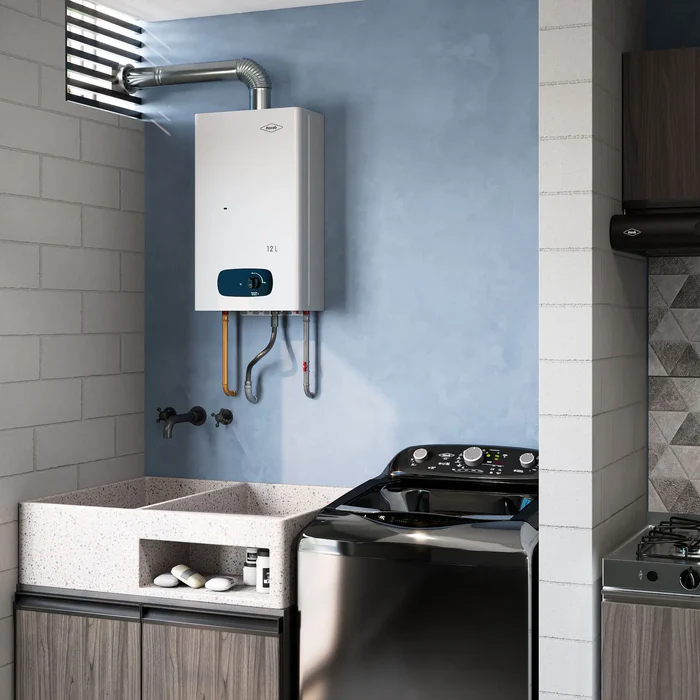

Instalación y reparación · Gas y eléctrico · Todo el Valle de Aburrá

Un calentador defectuoso puede generar pérdidas de gas, fugas de agua caliente o dejarte sin servicio en el momento menos indicado. En Plomeros H2O instalamos y reparamos calentadores de paso a gas, boilers eléctricos y de acumulación de todas las marcas.
Nuestros técnicos están certificados para trabajo con redes de gas doméstico, garantizando instalaciones seguras y cumpliendo con la normativa colombiana NTC.
💬 Solicitar servicioInstalamos calentadores instantáneos a gas natural o propano: conexión a la red, ventilación y prueba de hermeticidad incluidas. Trabajamos con ORBIS, Haceb, Junkers y otras marcas.
Instalamos duchas eléctricas y calentadores de acumulación eléctrico. Revisamos que el circuito eléctrico sea adecuado para el equipo antes de conectarlo.
Diagnóstico y reparación de pilotos apagados, quemadores defectuosos, válvulas de seguridad averiadas y fugas en conexiones de calentadores existentes.
Si tu calentador ya no tiene reparación, te asesoramos en la selección del nuevo equipo según el consumo de tu hogar o negocio, y realizamos la instalación completa.
Atendemos instalación y reparación de calentadores en El Poblado, Laureles, Envigado, Sabaneta, Itagüí, Bello, Robledo, Belén, Castilla, Manrique, Copacabana y La Estrella. Disponibles todos los días del año.
Contáctanos y un técnico especializado va hasta tu casa.